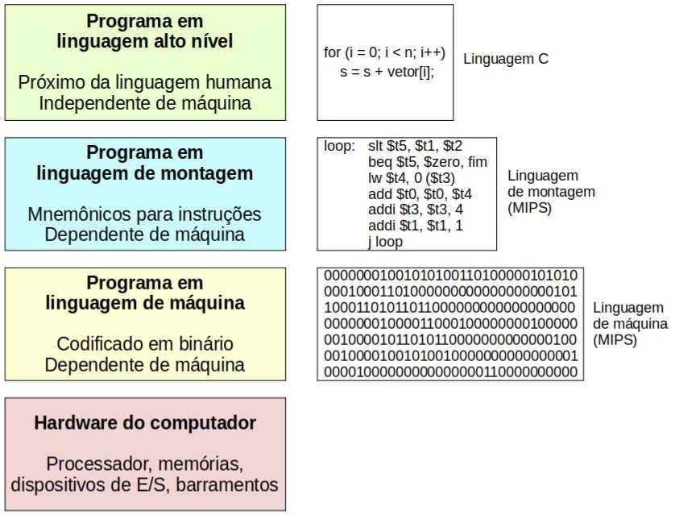
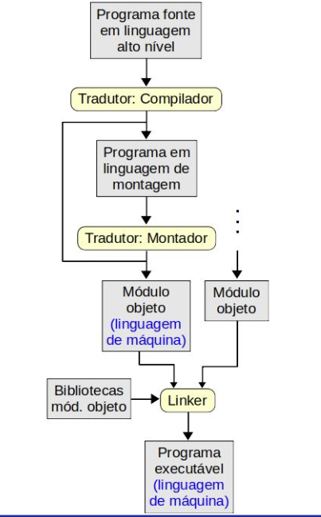

Disciplinas
-
SISTEMAS COMPUTACIONAIS. Concluído
Materiais
Vídeo 1 - [UFMS Digital] Sistemas Computacionais - Módulo 2. sendProf° ministrante: Dra. Nahri Moreano.
Conteúdo
Interface Hardware/Software.
Conjunto de Instruções de Máquina.
- Instrução de máquina:
- Instrução implementada pelo hardware e visível ao programador
- Representa comando que é interpretado e executado pelo processador
- Codificada como sequência de bits
- Dividida em campos que indicam operação e operandos (fontes e destino)
- ISA (Instruction Set Architecture)
- Interface entre hardware e software
- Diferentes famílias de processadores possuem diferentes ISAs
- Um mesmo ISA pode ter diferentes implementações, com custos e desempenhos diferentes
Interface Hardware/Software.
Conjunto de Instruções de Máquina.
- Inclui definição de:
- Quantidade de operandos das instruções
- Localização dos operandos:
- Em um campo da instrução, em um registrador ou em uma posição da memória
- Modos de endereçamento
- Categorias de operações das instruções
- Formatos e tamanhos das instruções
Categorias de Instruções de Máquina.
- Instruções lógicas e aritméticas
- Instruções de comparação
- Instruções de transferência de dados
- Instruções de alteração do fluxo de controle:
- Desvios condicionais e incondicionais
- Chamada e retorno de função
- Instruções de chamada ao sistema operacional
- Instruções de ponto-flutuante
Execução de um Programa.
- Processador:
- Não reconhece comandos das linguagens de programação de alto nível
- É capaz de executar apenas instruções de máquina
- Comandos do programa na linguagem de alto nível precisam ser transformados em instruções de máquina para programa ser executado
- Realizado através dos processos de:
- Compilação; ou
- Interpretação
Geração do Programa Executável.
- Compilação:
- Realizada pelo programa compilador
- Traduz programa fonte na linguagem de alto nível para programa em linguagem de máquina:
- Módulo objeto: ainda não é o programa executável
- Pode gerar programa em linguagem de montagem
- Montagem:
- Realizada pelo programa montador (assembler)
- Traduz programa fonte na linguagem de montagem (assembly language) para programa em linguagem de máquina (módulo objeto)
- Link-edição:
- Realizada pelo programa link-editor (ou linker ou ligador)
- Une vários módulos objeto e bibliotecas, gerando o programa executável
- Corrige e completa endereços de memória referenciados nos módulos
Interpretação.
- Realizada pelo programa interpretador
- Programa fonte na linguagem de alto nível é executado diretamente pelo interpretador
- Interpretador:
- Examina cada comando do programa na linguagem de alto nível; e
- Executa diretamente uma sequência de instruções de máquina equivalente àquele comando
- Não gera um programa executável